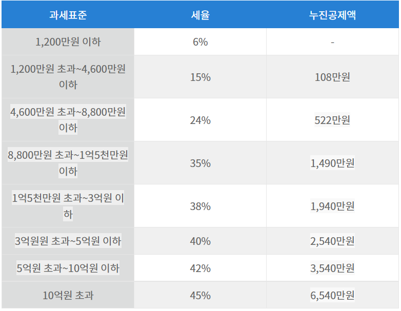

Index로 돌아가기
종합소득세 = 과세표준 * 소득세율
과세표준 = 총소득액 - 총공제인정액
총소득액 산출 = 시간당 pay를 입력받기, 하루근무시간 입력받기, 1년 근로일수 입력받기(1년 52주)
총공제인정액(약식신고%) = 랜덤으로 약식신고% = 30.0% ~ 40.0%를 산출한다
과세표준의 해당구간의 세율을 부가하여 세액을 출력하시오

종합소득세 : 0
총소득액 : 0, 총공제인정액 : 0, 과세표준 : 0, 소득세율 : 0
시급 :
일 근무시간 :
년 근무일수 :
종합소득세 계산